Sequence-to-sequence(Seq2seq)
seq2seq：input是一个seq，output也是一个seq，且output的seq长度由model决定。
seq2seq Model在很多领域都有应用，例如NLP的大部分领域（语音辨识、翻译、语音翻译等）、multi-label classification、Object Detection等。虽然seq2seq Model在这些领域都能应用，但为每个问题客制化定制Model才能达到更好的效果。
Seq2seq的结构为一个Encoder和一个Decoder，其中Encoder吃input，将处理好的结果送进Decoder，Decoder决定输出是什么seq。seq2seq的起源：《Sequence to Sequence Learning with Neural Networks》
当下，最常用的seq2seq是transformer：attention is all you need
transformer的架构如下图所示：
transformer
Encoder
Encoder做的事情是吃一排向量，输出同样数量的一排向量。这样的事情很多架构都能做到，而transformer中应用的是self-attention。
具体而言，Encoder的input经过了一个一个的Block（包含多个hidden layer），最后得到output，而transformer的block为self-attention+fully-connected。
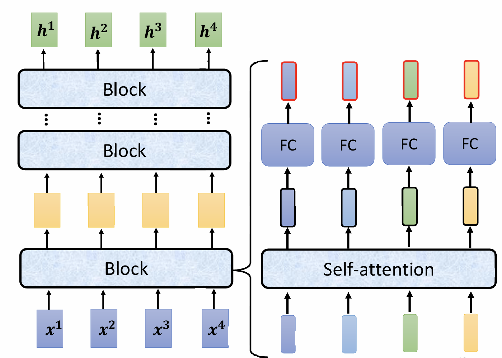
在最早提出的transformer架构中，还要加上一个residual connection以及各层输出都要经过normalization：
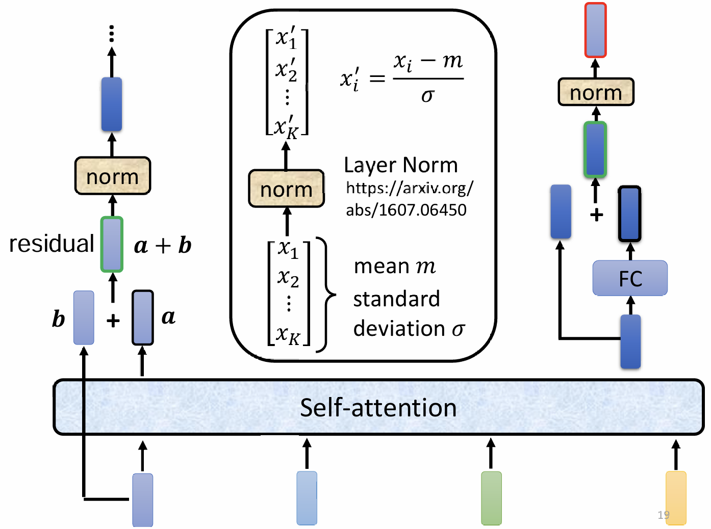
这里的normalization使用的是Layer Normalization
总上所述，再看一下transformer的架构Encoder部分：
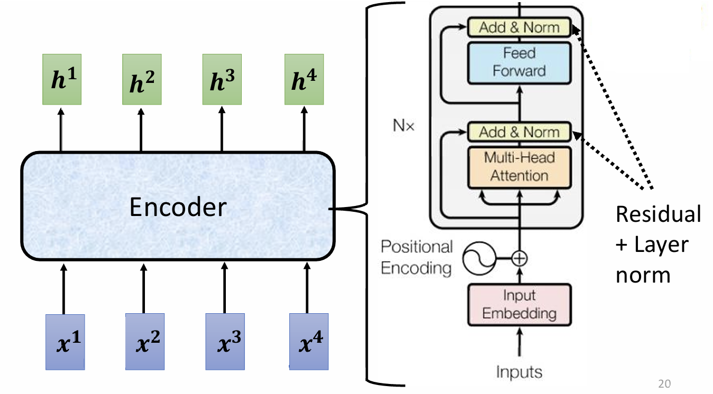
这是最原始的Encoder设计，目前已经有了很多变种，例如：
《On Layer Normalization in the Transformer Architecture》
《PowerNorm: Rethinking Batch Normalization in Transformers》
Decoder——Autoregressive(AT)
Decoder会读入Encoder的output，从一个special token（BEGIN）开始，输出一个vector，这个vector的长度和vocabulary size是一样的（以中文语音辨识为例，vocabulary就是所有的常见字），vector中的值是一个distribution，其中概率最大的就作为当前output：
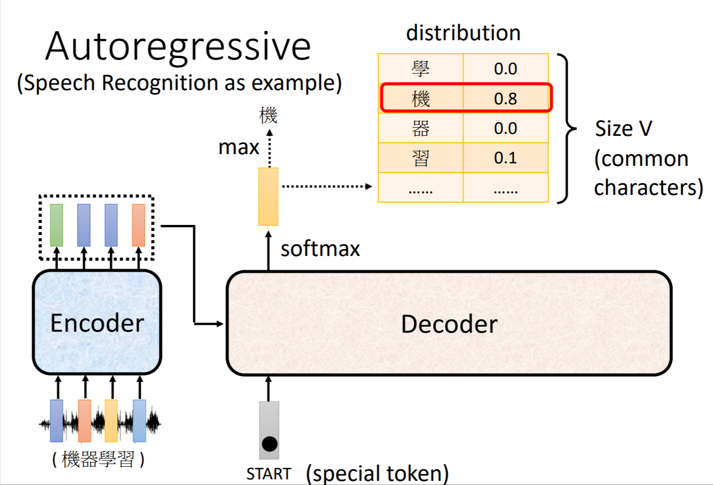
随后，将此前所有的output作为额外的input，加上BEGIN和Encoder的output共同作为input，进行下一次output。
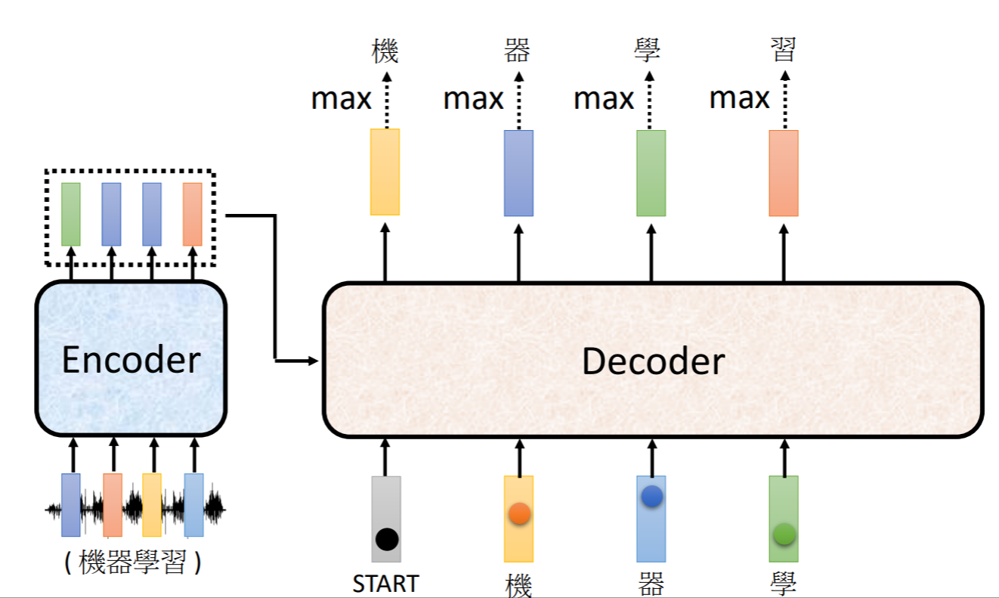
Decoder的结构如下：
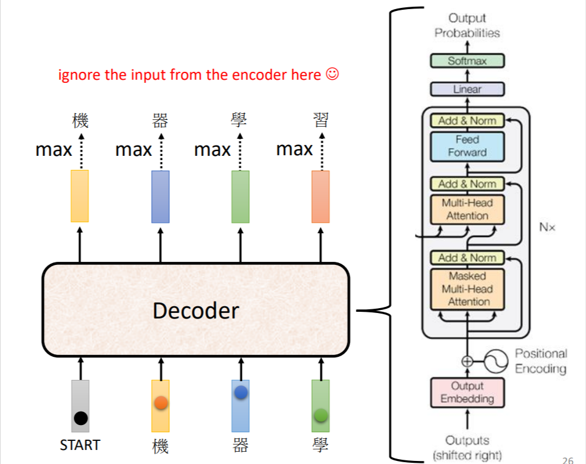
对比一下Encoder和Decoder：
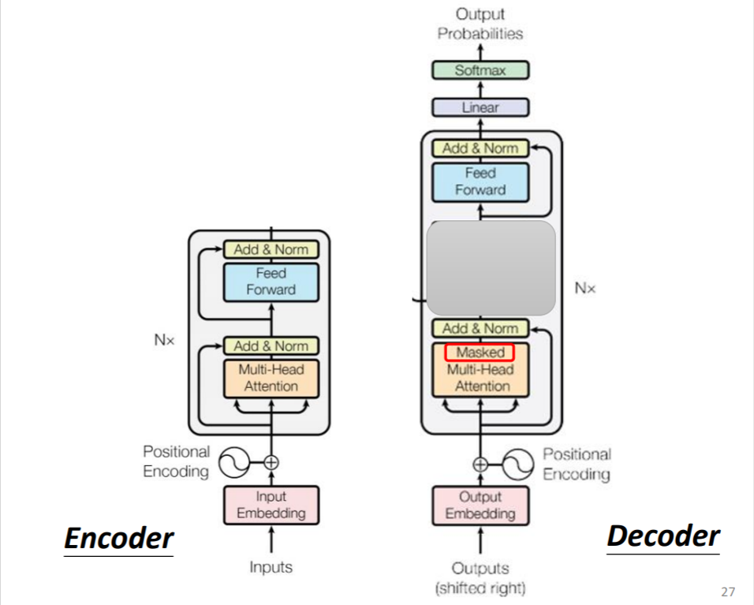
如果忽略被遮挡部分，那么Encoder和Decoder是完全一样的。
[scode type=”yellow”]Masked Attention
简而言之，就是self-attention产生output的时候只能获取自身及之前的信息。
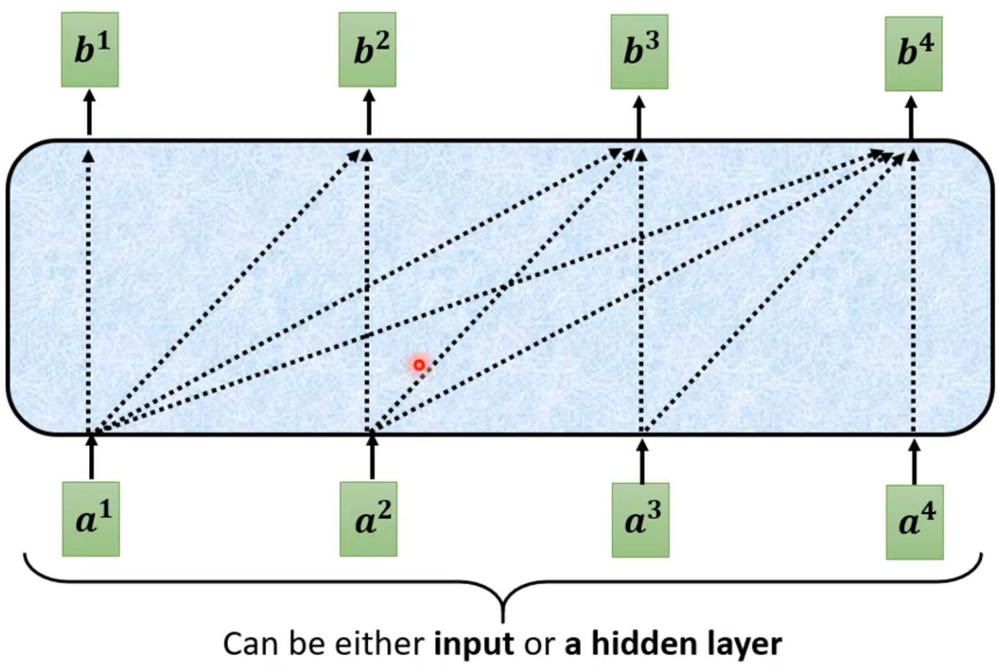
Masked原因是：Decoder的时候，output是一个一个产生的，所以他只能考虑之前产生的vector[/scode]
Decoder会设置一个end token，当output end token的时候，Decoder就会停止。
AT v.s. NAT（non-autoregressive）
相较于AT，NAT最显著的区别是吃一排BEGIN token，同时产生output。其控制序列长度的方法可能为：
- 用另一个model predict长度
- A给定一个很大的长度，截取end token之前的output
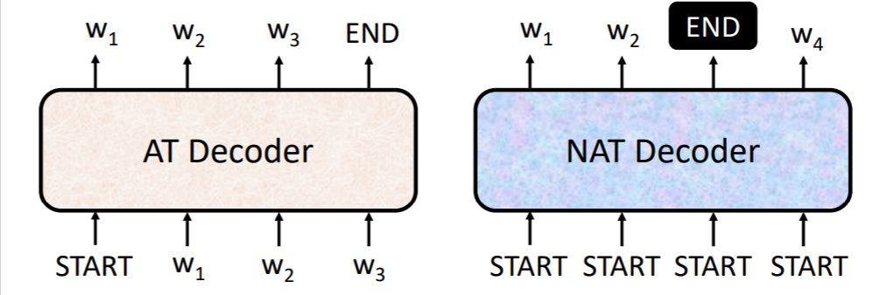
NAT的好处：平行计算，速率更快；可控制的output长度。但NAT的performence不如AT（由于Multi-modality），因此当下对NAT的优化仍是一个问题。
Encoder-Decoder
Encoder与Decoder的连接部分叫做Cross-attention。由上文transformer架构中可以发现，Encoder吐出两个东西被Decoder所接收，这一部分所进行的操作就是cross-attention。
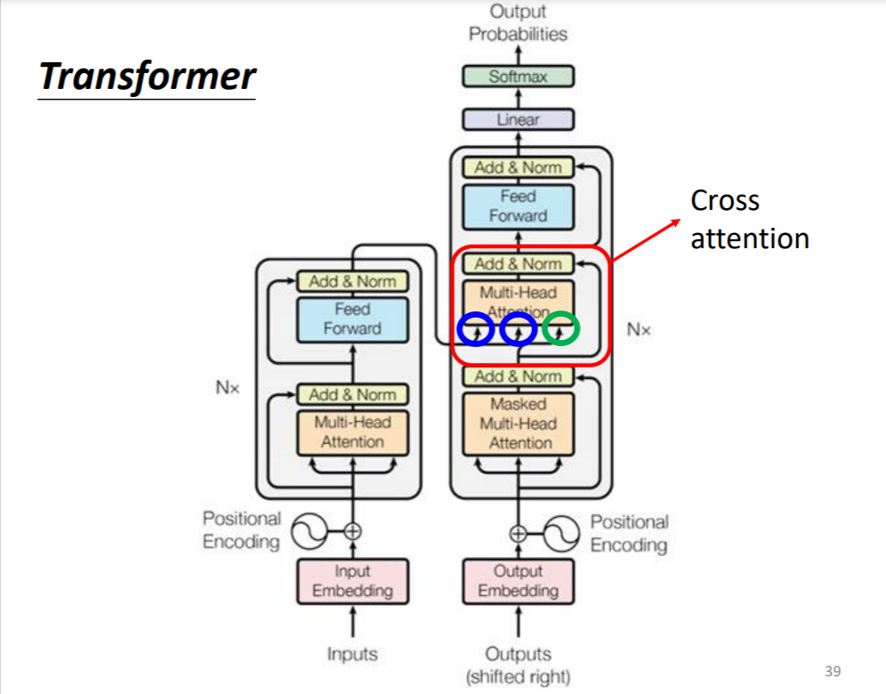
其具体的运作机制为（以BEGIN为例）：
BEGIN经过一个Masked self-attention得到一个vector，然后乘上一个矩阵得到$q$，用这个$q$去对Encoder的output求attention score，在做一个weighted sum，得到的输出送进Decoder的fully-connected layer。如下图所示：
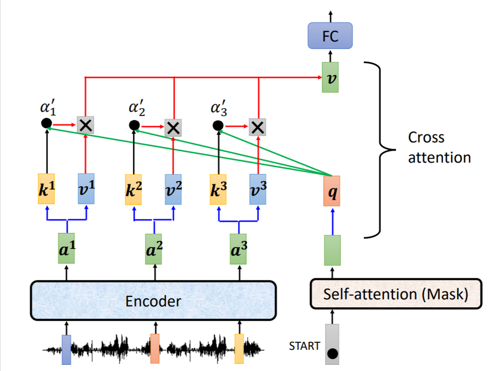
对于后续产生的output，也是同理：
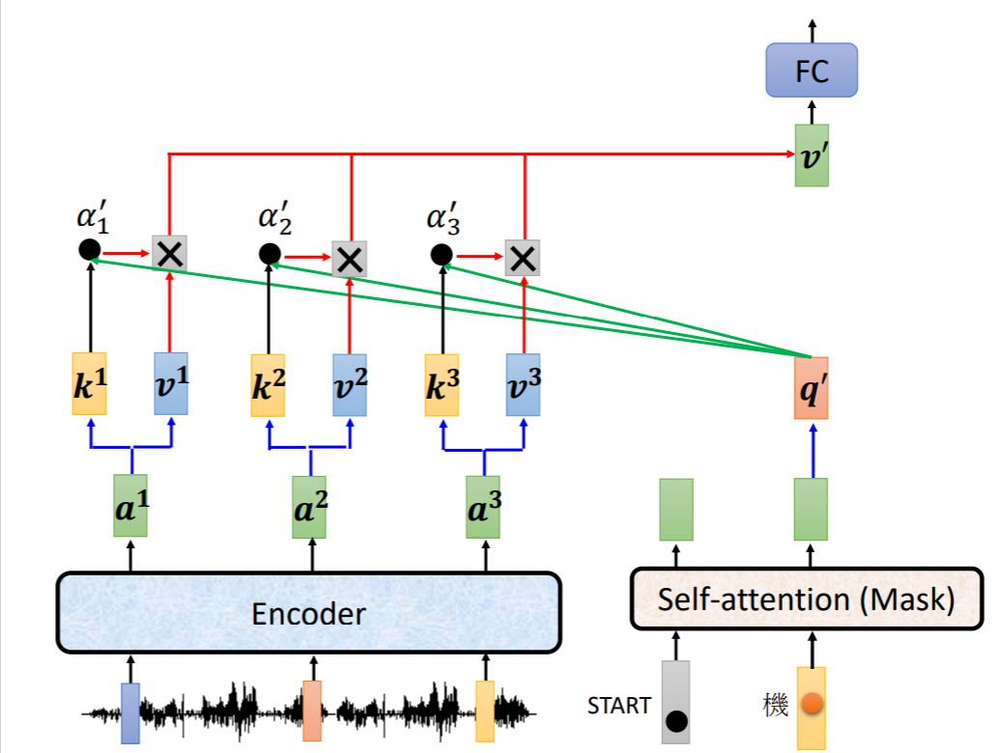
To learn more，另一种cross-attention方式：《Rethinking and Improving Natural Language Generation with Layer-Wise Multi-View Decoding》
how to traing
transformer所做的事情可以看作是一次一次的classification，因此可以计算每个predict和truth的cross entropy，然后minimize cross entropy即可。但实际train的时候，Decoder的input是正确的label，而非predict的结果。这种做法叫做teacher forcing，可以加速模型训练过程，提高生成序列的质量。
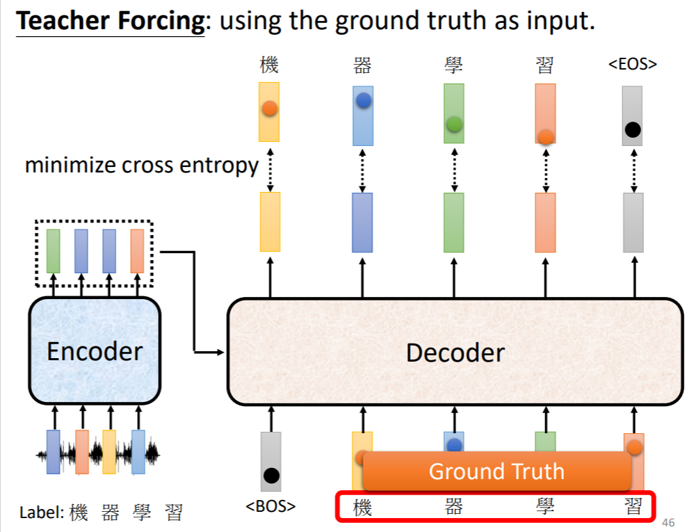
当然，这样做会有一个问题：在testing的时候是没有正确label的，因此这就会造成模型的mismatch，这种情况叫做exposure bias。
一个可能的解决方法：Scheduled Sampling。简而言之，就是给Decoder一些错误的信息。
原始的Scheduled Sampling：《Scheduled Sampling for Sequence Prediction with Recurrent Neural Networks》
一些改进：
《Scheduled Sampling for Transformers》
《Parallel Scheduled Sampling》
Tips
Copy Mechanism
有些时候，input seq中可能会出现一些奇怪的东西，例如在翻译或做chat-bot的时候，人名、地名等。这种情况下机器很难学到这些古怪的东西，因此直接将其复制下来到output中也是一种做法。
最早实现这种方法的是Pointer network，下面这篇文章使用了pointer network：
《Get To The Point: Summarization with Pointer-Generator Networks》
其变形：《Incorporating Copying Mechanism in Sequence-to-Sequence Learning》
Guided Attention
在某些情况下，机器可能会犯一些严重的错误，比如output缺失、遗漏某个input的信息。可以使用Guided Attention，相当于认为引导机器的行为。例如在做语音合成的时候，attention是由左向右的，这时就可以认为限制attention的过程。
Guided Attention方法关键词：Monotonic Attention、Location-aware Attention。
Beam Search
GPT-4o：Beam Search是一种常用的启发式搜索算法，主要用于自然语言处理（NLP）中的序列生成任务，如机器翻译、文本摘要和对话生成等。相比于贪心搜索（Greedy Search），Beam Search在生成序列时可以同时保留多个候选路径，从而提高生成结果的质量。
工作原理
Beam Search的主要思想是保留多个候选路径（称为“beam”）而不是只保留一个最优路径。在每个时间步，算法会扩展所有当前的候选路径，并只保留得分最高的𝑘个路径。这里的𝑘称为beam size。
Optimization
在NLP方面，BLEU score往往是评价一个model好坏的标准。
GPT-4o：BLEU（Bilingual Evaluation Understudy）评分是一种用于评估机器翻译和其他自然语言生成模型的质量的指标。BLEU评分通过比较生成的文本与一个或多个参考文本来衡量翻译的准确性和流畅性。其核心思想是计算生成文本和参考文本之间的 n-gram 的重叠程度。
我们train的时候，使用的是cross entropy作为loss，而实际评测标准可能是BLEU score，因为cross entropy是可微分的，而BLEU score较为复杂且不可微分，因此如果使用BLEU score作为loss，optimization就会难以进行。
那该怎么办呢？When you don’t know how to optimize, just use reinforcement learning!
各种各样的self-attention
self-attention的各种变体往往取名为xxxformer，先放一张各种self-attention的对比：
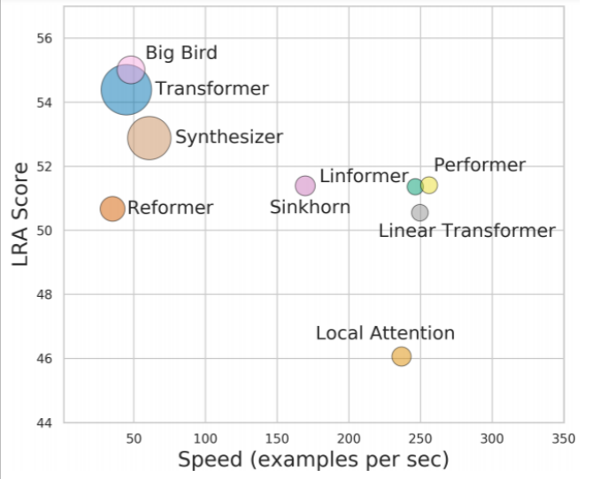
在各个Model中，self-attention只是其中一个部分。我们知道，self-attention的计算复杂度是和seq的长度成平方的关系的，因此当seq很长时，self-attention占据了计算的大部分时间。这些优化的算法，大部分都是设法减少self-attention的计算。
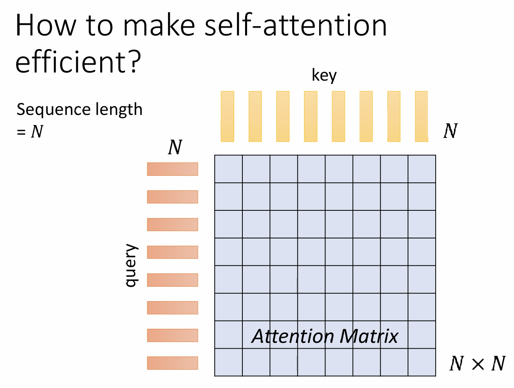
Local Attention/Truncated Attention
有些情况下，可能不需要了解整个seq的信息，只需要了解附近vecotr的信息。具体做法是，$i,j$接近的时候才取计算attention score，其他位置直接设0。
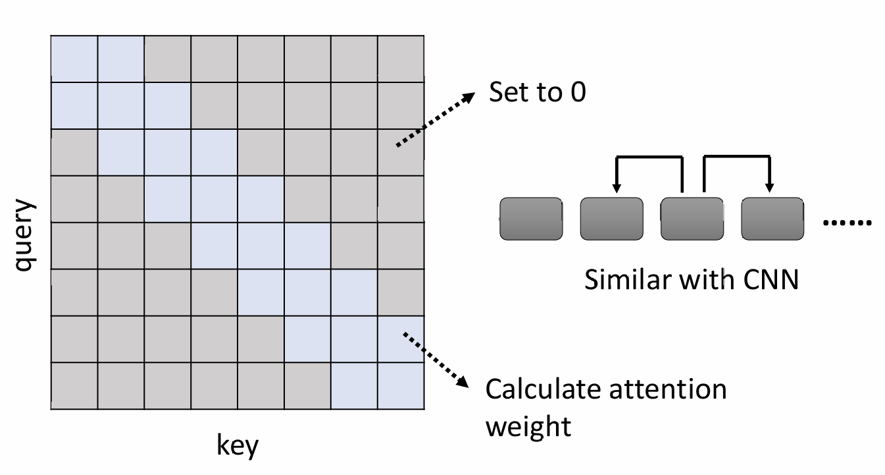
但是这样的话，就和CNN没什么两样。因此这种方法，虽然可以加速运算，但不一定能有好的效果。
Stride Attention
考虑到local attention不能考虑到距离远的位置，但还要简化计算，可以使用Stride Attention。其机制为每隔一定的Stride计算attention score，其他设0。
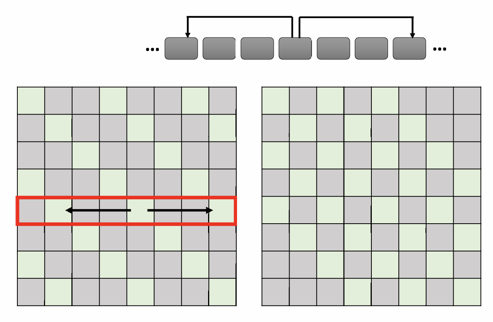
Global Attention
以上两种做法都是以某个位置为中心去计算，如果想知道整个seq，可以使用Global Attention。简单来说，就是加上一个特殊的token，这个token记录了整个seq的信息：它会去attend每一个token，同样，它也会被每个token attend。
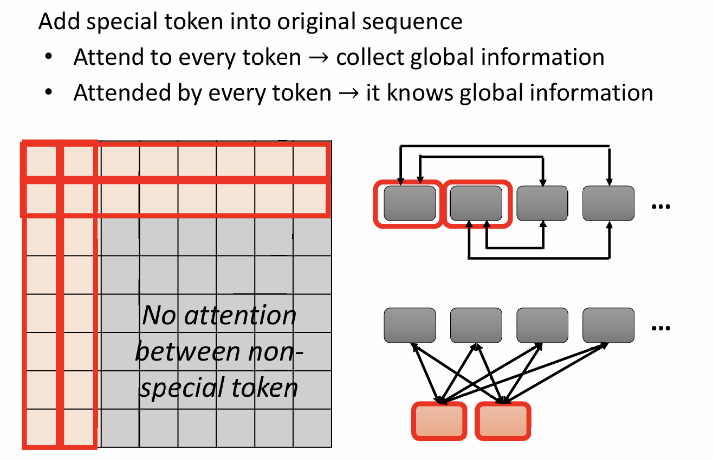
上面是两种做法：
- 在原seq中选择特殊的token。
- 在原seq外额外添加特殊的token。
那么这么多方法，该如何选择呢？答案是：全部选择。即不同的head使用不同的attention，这样效果可能会更好。
例如：《Longformer: The Long-Document Transformer》、《Big Bird: Transformers for Longer Sequences》
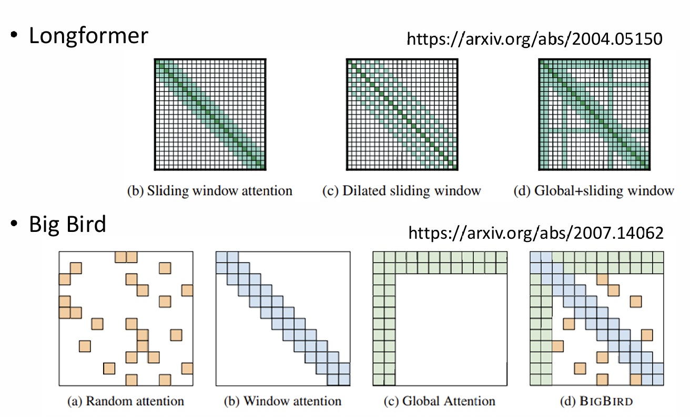
以上方法都是人为决定计算哪些attention，还有一些不依赖人直觉的做法。
比如，我们可以将attention score非常低的地方直接设0，这样对原attention matrix不会产生很大影响，还能加速计算。那么问题是：如何估计出哪些位置可能很小呢？
Clustering
在下面两篇文章里都用了类似的方法Clustering
《Reformer: The Efficient Transformer》
Efficient Content-Based Sparse Attention with Routing Transformers
Clustering的做法是：先把query和key拿出来做Clustering，比较接近的属于一个Cluster，否则属于不同的Cluster。计算Cluster的时候可以采用一种虽然可能不准确但是快速的估测方法，上述两篇文章采用了不同的计算cluster的方法，这样就能加快计算。只有query和key在一个cluster中，才去计算attention score。
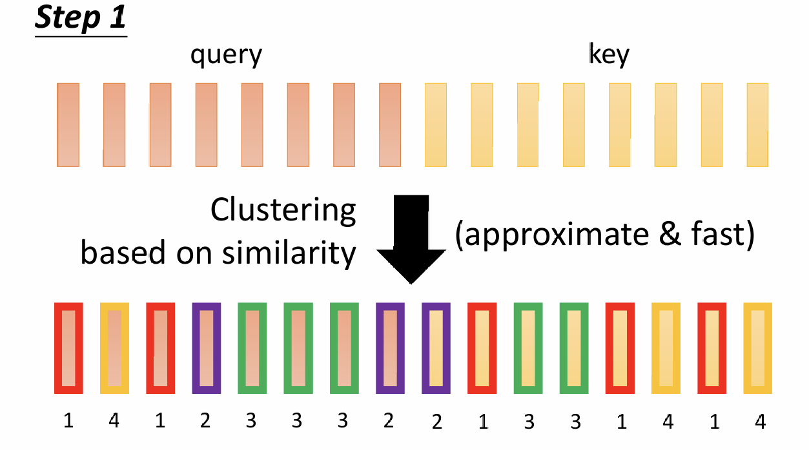
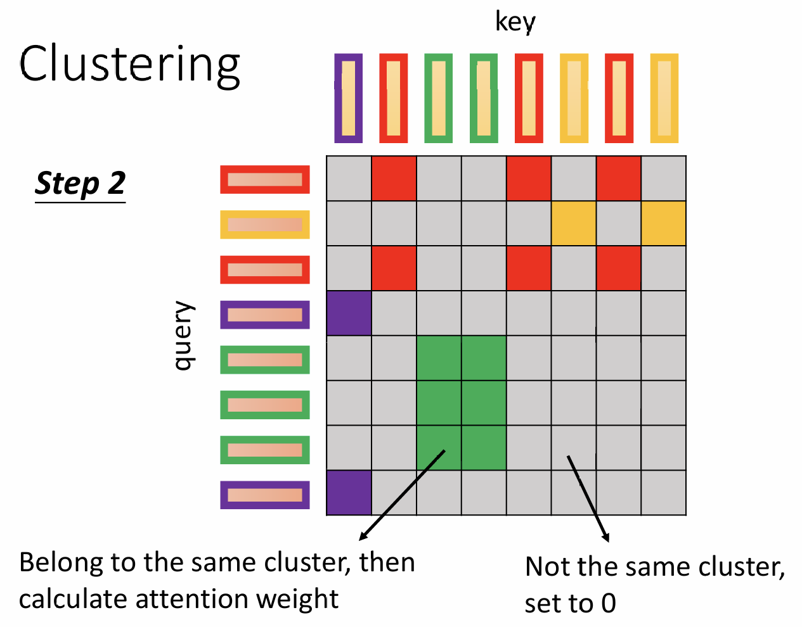
上述计算方法都是依靠人的理解，Clustering虽然是近似0，但是“相似”的概念也是认为定义的。下面的方法是通过learn的方式决定计算哪些attention。
Learnable Patterns——Sinkhorn Sorting Network
《Sparse Sinkhorn Attention》
通过learn一个matrix，决定哪些attention需要计算：
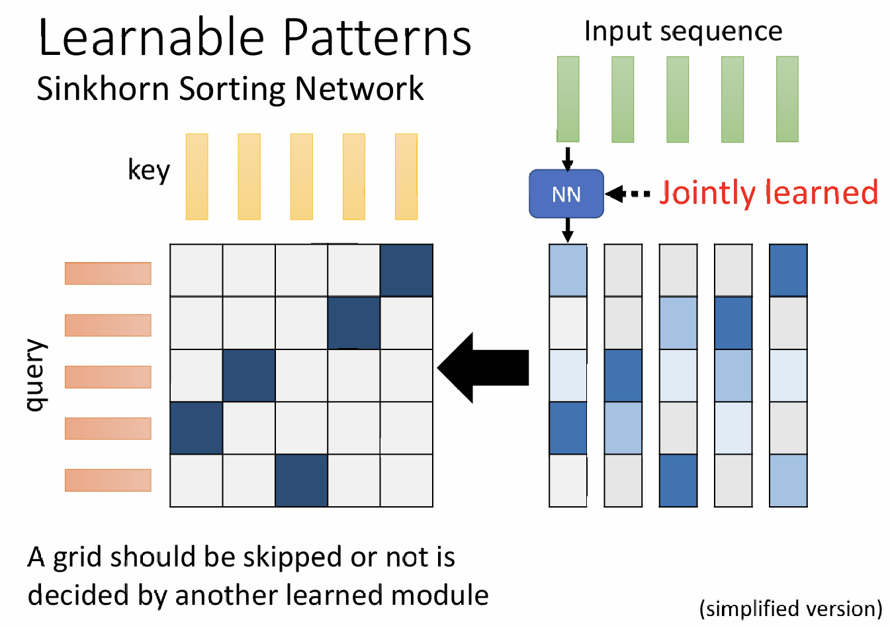
Linformer
上面的方法都计算了N×N的attention matrix，能不能减小attention matrix的大小呢？
具体方法是：挑选部分representive keys和representive values，用representive keys和query相乘得到的结果和representive values做weighted sum得到attention score。
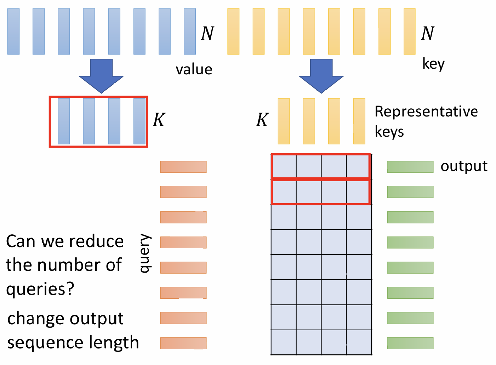
[scode type=”yellow”]为什么不选择representive query？
output seq的length会缩短，在某些情况下会有影响（比如seq中每个vector都有label）。[/scode]
一些选择representive key的方法：
《Generating Wikipedia by Summarizing Long Sequences》、《Linformer: Self-Attention with Linear Complexity》
k,q first → v,k first
回顾一下self-attention的计算：
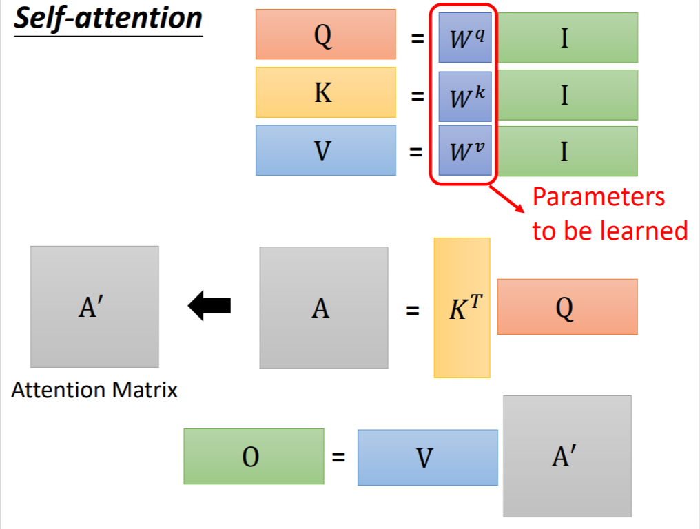
我们假设没有softmax的步骤（即$A\rightarrow A^\prime$的过程），那么计算过程可以表达为：
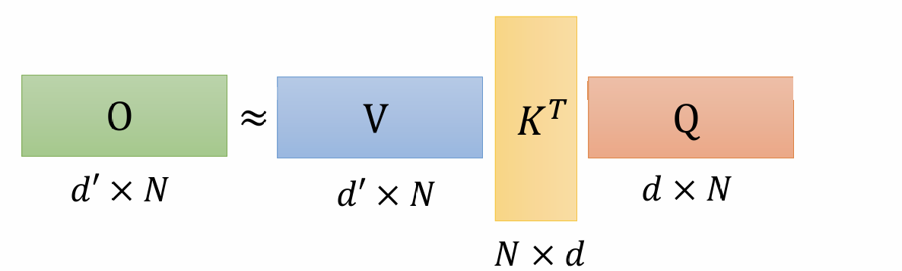
加速方法：先计算$VK^T$而不先计算$K^TQ$。
原理：计算顺序的不同，结果相同，但乘法计算次数不同。
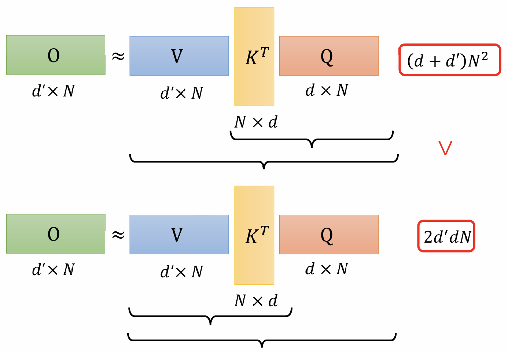
我们发现，先计算$K^TQ$乘法运算次数为$(d+d^prime)N^2$，而先计算$VK^T$乘法运算的次数为$2dd^primeN$。一般情况下，N的大小是大于d的，因此改变运算顺序也能加快运算速度。
但还有一个问题：我们忽略了softmax。现在就来解决softmax的问题。
假设要产生attention score $b^1$，那么有：
我们假设有一个$\phi$，它的作用是近似dot product的exponential，具体为：
其中$\phi(q)$的作用是将其转化为另一个vector。
那么:
假设$\phi(q)$会将$q$转化为一个M dim的vector，那么：
将$\sum\limits_{j=1}^Nk_1^jv^j$视作一个vector，可以得到：
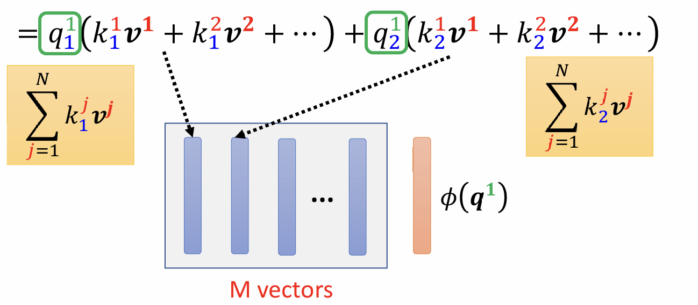
那么最终的可以表达为矩阵运算：
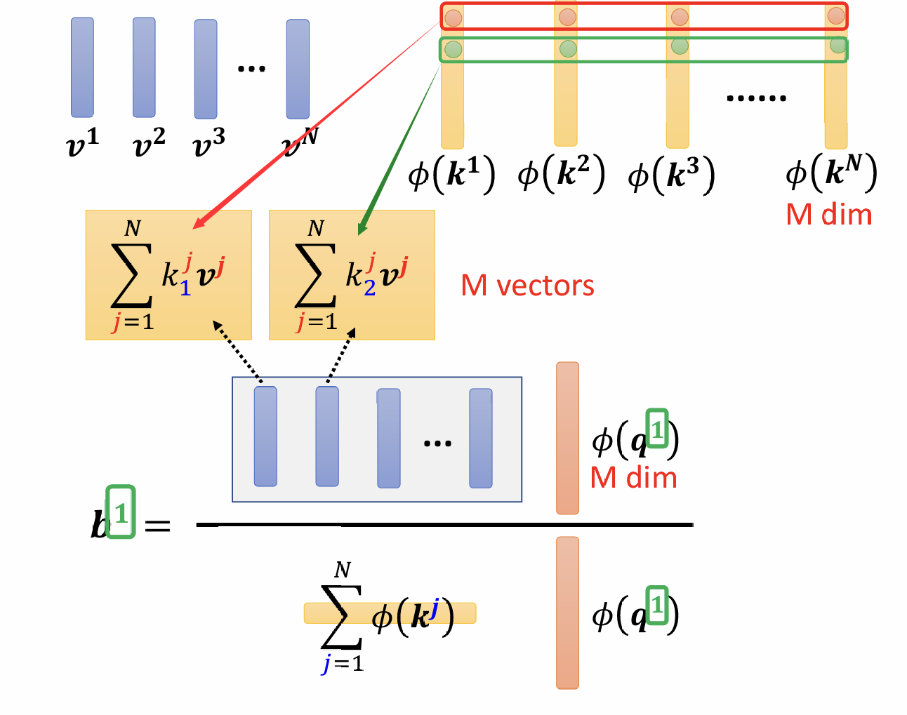
[scode type=”green”]这样做带来的好处是：在计算某个attention的时候，只有query是变化的，其他东西不需要重复计算。[/scode]
上述推导只想说明一件事：可以通过上述方法简化计算，而self-attention的结果不会有很大误差。计算方法如下：
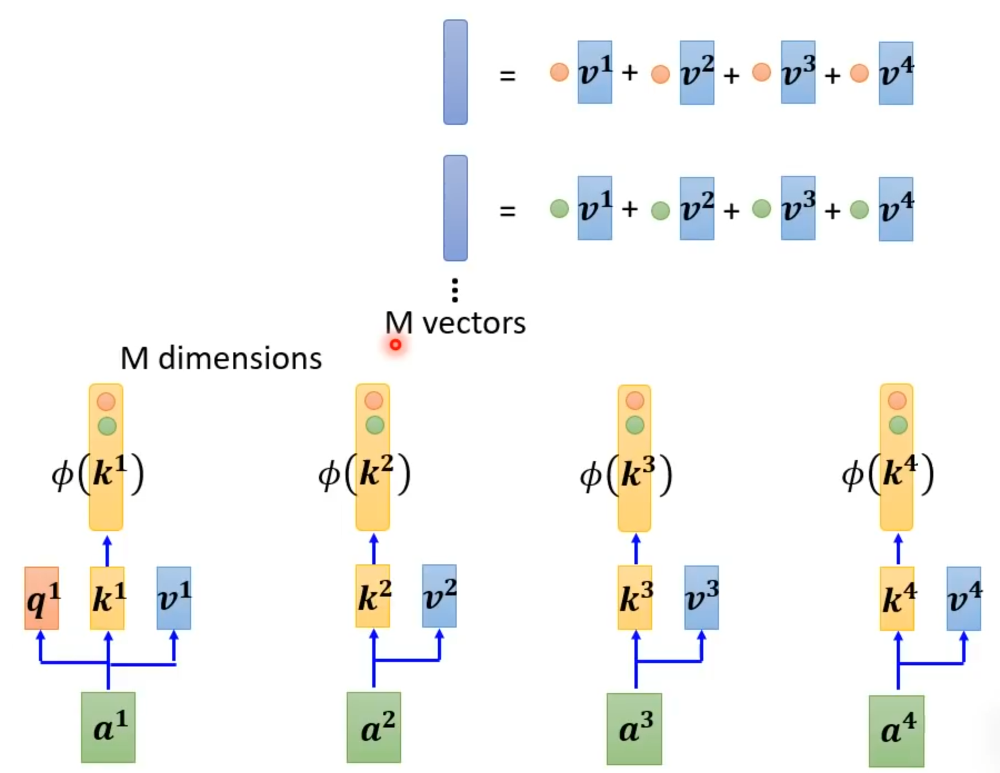
首先通过$k$和$v$算出M个vector，然后依次使用query去和这M个vector做weighted sum即可得到分子这一项，分母同理。
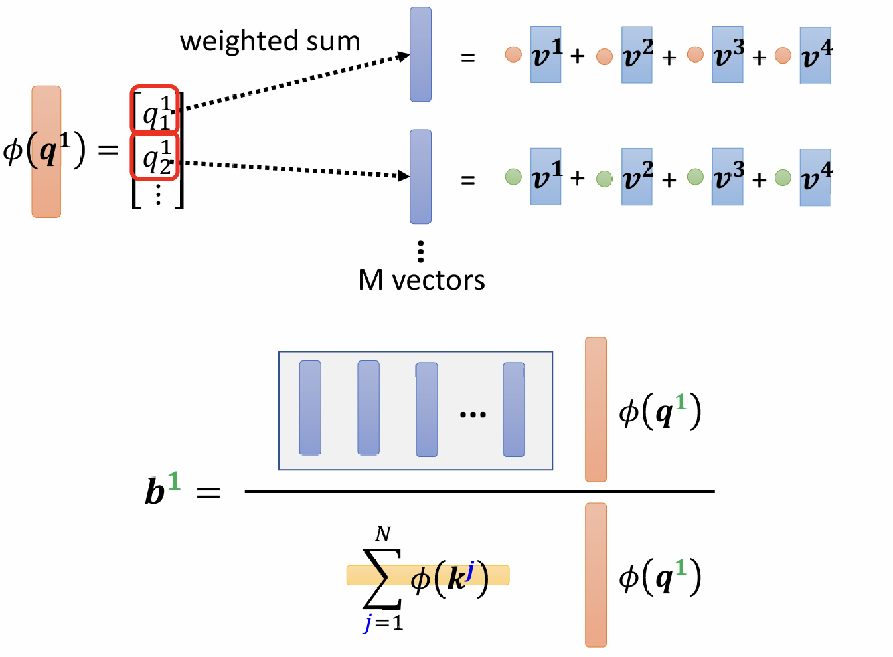
这种做法唯一的问题就是如何定义$\phi$。不同的paper有不同的做法：
- 《Efficient Attention: Attention with Linear Complexities》
- 《Transformers are RNNs:Fast Autoregressive Transformers with Linear Attention》
- 《Random Feature Attention》
- Rethinking Attention with Performers
Synthesizer
还有一种做法，不需要$q,k$计算attention matrix。这种方法通过learn去学习attention matrix，把他当作network的一部分，即Synthesizer。New Framework——Attention-free
下面这些方法不使用attention去处理seq2seq的问题： - 《FNet: Mixing Tokens with Fourier Transforms》
- 《Pay Attention to MLPs》
- 《MLP-Mixer: An all-MLP Architecture for Vision》
总结
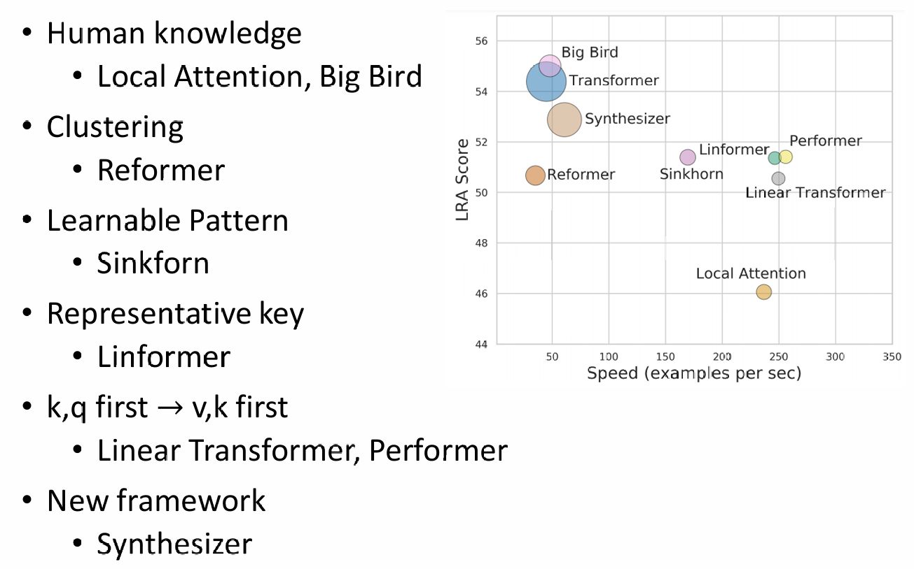
注：LRA分数越高，代表attention表现越好。每个方法的圈圈大小代表使用memory的大小。